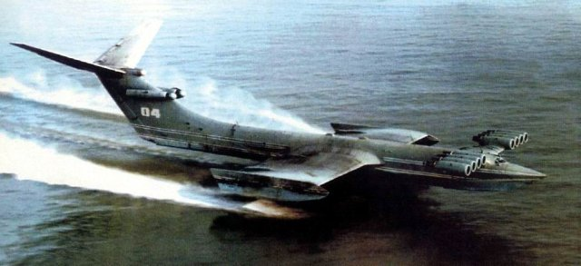
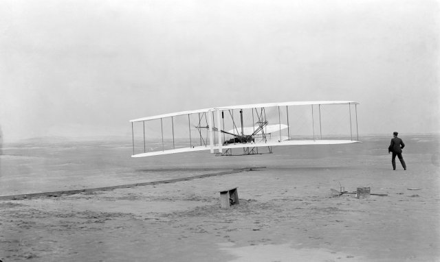

Wing In Ground Effect
An announcement that Chinese researchers are investigating ground effect vehicles or wing in ground-effect (WIG) vehicles re-opens an interesting chapter in aerodynamics dating back to the very first powered flights.
Caspian Sea Monster: Soviet KM Ekranoplan
The Chinese announcement provides foundation to speculation among Google Maps users that an Ekranoplan is stationed at the Qingdao naval base. Ekranoplan is the Russian name for a WIG or wing in surface-effect (WISE) vehicle designed to travel over water and level land, with immense cargo carrying capabilities compared to conventional airplanes.
Lift and Drag
Waterborne WIG vehicles are more airplane than boat. They benefit from improved lift and reduced drag compared to conventional airplanes. A relatively high pressure region develops beneath the wing's lower surface and above the water surface, which enhances its lift compared to a conventional wing in free air. The close proximity of the water also disrupts the formation of wing-tip vortices, which are a major cause of induced drag on conventional wings in free air. To benefit from WIG, the airfoil must have a relatively flat lower surface; otherwise lift can be reduced. Designers deliberately shape the underside of racecars using diffusers to generate downforce due to ground-effects.
Drag reduction is a major concern of high speed boats too, and the trend towards planing (also known as hydroplaning) among world water-speed-record boats is just a hair's breadth away from WIG low-level flying.
Pioneers
Early airplane pioneers, with their under-powered designs, were unknowingly kept airborne by WIG. The historic first flight by the Wright Brothers was only possible due to WIG.
Wright Flyer: Using WIG to stay airborne
Of course the earliest WIG flying predates the Wright Brothers by approximately 70 million years, namely that of large sea birds such as the albatross – another example of where nature leads we follow.
Ekranoplan
During the Cold War, the Soviets developed a number of Ekranoplan prototypes to exploit WIG. The Ekranoplan prototypes (a couple are still visible as of August 28, 2007 in Google Maps) had the ability to fly at high speeds (up to 250mph or 400 km/h) a few meters above the surface of water due to higher lift and reduced drag from WIG compared to conventional high-flying airplanes.
The largest of the Soviet Ekranoplans – designated KM but better known by its US spy codename, the Caspian Sea Monster – had a wingspan in the range 32-40m and was between 92-106m in length. At the time of its first flight, in 1966, it was approximately twice the weight, at over 540 tons, of the heaviest conventional airplane. It continued flying until a fatal crash in 1980.
The Future
No large, government-funded WIG vehicles have made it past the prototype stage – maybe the Chinese effort can buck this trend and put a WIG vehicle into production. Either way there is a thriving hobbyist community that will continue to build remote-controlled WIG models and recreational vehicles based on the WIG concept. The ingenuity of these under-funded hobbyists, following the likes of the Wright Brothers before them, is inspiring.
Feedback
Questions? Ideas? Problems?

Recent blog posts
- CFD Simulates Distant Past
- Background on the Caedium v6.0 Release
- Long-Necked Dinosaurs Succumb To CFD
- CFD Provides Insight Into Mystery Fossils
- Wind Turbine Design According to Insects
- Runners Discover Drafting
- Wind Tunnel and CFD Reveal Best Cycling Tuck
- Active Aerodynamics on the Lamborghini Huracán Performante
- Fluidic Logic
- Stonehenge Vortex Revealed as April Fools' Day Distortion Field
 Get our Blog feed
Get our Blog feed
Comments
Ekranoplans in Action
See Soviet Ekranoplans in action: